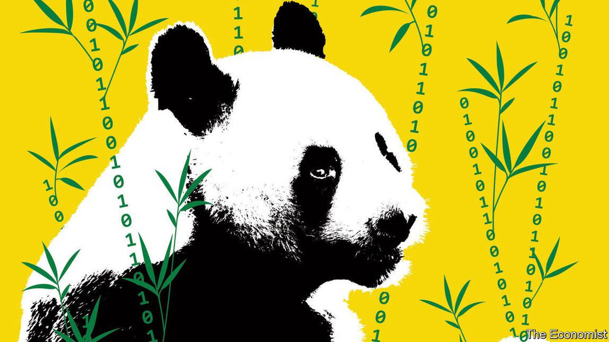

2021-09-21T14:25:13+00:00
代码立法整治
中国已成为数字技术监管的实验室
有了新的保护措施，但不防党

由于Facebook和谷歌等外国竞争者被拒之门外，过去20年里中国市场一直是国内科技巨头的天下。虽然共产党牢牢掌控着政治，但科技公司自身的经济活动享有相当大的自由度。“那曾是个威权体制内的‘狂野西部’。”美国智库彼得森研究所（Peterson Institute）的马丁·乔泽姆帕（Martin Chorzempa）说。
现在，共产党正在提醒互联网亿万富豪们谁才是老大。国家主席习近平已授权发起一轮非同寻常的整治行动。去年，互联网金融巨头蚂蚁集团原定的IPO在最后一刻被叫停。今年7月，网约车公司滴滴在纽约上市两天后，被中国互联网监管机构下令停止新用户注册，并从移动应用商店强制下架其应用。9月6日，北京市否认了它正考虑将滴滴收归国家控制的报道。
网络游戏公司不得不开始启用用户人脸识别，来配合执行儿童每周玩网游不得超过三小时的禁令。整治改变了力量平衡，乔泽姆帕表示。如今，“技术官僚们的权力变大了，一改过去多年里企业不把正当合理的监管当回事带给他们的无力感”。
共产党正在推动的不仅仅是表面的变革。它正在通过一整套新的法律法规来迫使科技公司改变其行为和产品，目的是控制中国人在网上的所见和所为。新规定将要求科技公司给自己的平台编写代码来推广政府乐见的内容，禁止政府不喜欢的内容。这应该会比用“打地鼠”式的方法逐个贯彻党的意志更为高效，而且较之那种投入大量人力试图直接控制技术体系的做法，现在的做法更能大规模实施。
仅在过去一个月里，中国的立法机构就敲定了至少四部新的法律法规。随着它们在未来三个月陆续生效，中国的互联网将有可能被重塑。其他国家和地区的技术法规，如欧洲的《通用数据保护条例》（以下简称GDPR），大多要求企业在对用户数据做具体处理时须征得用户同意。中国的新规严格得多，涵盖范围也更广。科技公司将需要维护国家安全和公共秩序，立辅（Leaf）律师事务所驻北京代表处的数据隐私顾问尼古拉斯·巴赫马尼亚尔（Nicolas Bahmanyar）表示。“一条小小的横条口号是不够的。”他补充道。
中国首部隐私法《个人信息保护法》将于11月1日生效。这部法规历经多年起草审议，却比它有所借鉴的GDPR篇幅短得多，也粗略得多，列出的基本准则既宽泛又故意含糊其辞。该法的细节和日后的重新解释将交由针对特定行业或技术的具体规定来处理。巴赫马尼亚尔表示，这让监管能够跟上快速变化发展的技术。同时它也给政府留出了空间，以便根据其需要来决定如何执行模糊的规定。一些公司的数字服务如今被视为关键性基础设施，政府为此出台了管治这类企业的法规，滴滴正是因此而受挫：就在它试图上市时，这些规则做出了修订，把海外上市纳入管辖。
并非所有的新法律都会像用以打击滴滴的法律那样引发投资者极大的不安。一些新法律针对的问题同样困扰着西方国家。8月27日，国家网信办发布了一套即将出台的法规的草案，旨在规范算法推荐。亚马逊和阿里巴巴等公司都利用这类软件来根据购物记录向用户推荐产品，TikTok等短视频应用用它们推算观众的喜好，以向他们提供更多相关内容。
例如，该法规草案要求公司告知用户对其添加的标签的关键词，并允许用户删除这些关键词。原则上，这将意味着中国的互联网用户不会再因为推荐算法断定他们可能想买什么冰箱，而受到冰箱广告的困扰。公司也不得编写诱导用户“沉迷或者高额消费”的算法。涉及员工调度的算法，如滴滴的司机管理系统，必须履行“劳动者权益保障”。看起来，这些规定是想解决全世界消费者都在抱怨的问题。
草案还要求利用推荐算法的公司“坚持主流价值导向”并“积极传播正能量”。而且此类算法不得用于“从事危害国家安全”的活动或者扰乱经济和社会秩序。从这些表述来看，这些规定似乎是要让任何有损政府形象的内容都无法得到算法推荐。
北京策纬咨询公司（Trivium）的肯德拉·谢弗（Kendra Schaefer）写道，这些新的算法法规的发布标志着中国的科技立法已经比欧洲走得更远（美国只有加州已有这类法规）。
数据保护专家表示，其中很多改变将是有益的。中国网民频繁受到垃圾短信和电话的骚扰。公安部开发了一款承诺能屏蔽欺诈电话和短信的应用，自3月发布以来已成为中国下载量最大的应用之一。中国媒体上有大量关于民众个人数据被盗的报道。2016年，即将上大学的徐玉玉在把自己的全部积蓄转给骗子后死于心脏病，对方利用从黑市购得的个人数据向她行骗，让她误以为他们是大学的工作人员。
保护人们免遭此类侵害将会提升共产党心系普通民众的声誉。新法规赋予中国公民相比其他任何国家的民众都更多的权利去对抗企业。但它们却恰恰没有赋予中国互联网用户可行使的隐私权去对抗政府。班加罗尔的律师事务所J. Sagar Associates的萨吉·辛格（Sajai Singh）表示，事实上，中国在数据处理方面建立起单一共同标准会更方便政府监视公民。乔泽姆帕表示，修改法律来让公司重写软件是一种翻天覆地的巨变。一旦它们开始觉得自己可以“在这个层面和细节上进行干预，那它们还会再做什么？”他问道。
2021-09-21T14:25:13+00:00
Codified crackdown
China has become a laboratory for the regulation of digital technology
There are new protections, but not from the Communist Party
WITH FOREIGN competitors such as Facebook and Google blocked, domestic tech giants have for two decades dominated the Chinese market. The Communist Party has kept a firm grip on politics, but the tech firms have had considerable leeway in their business activities. “It was a Wild West within an authoritarian system,” says Martin Chorzempa of the Peterson Institute, an American think-tank.
Now the Communist Party is reminding internet billionaires who is boss. President Xi Jinping has authorised an extraordinary crackdown. Last year the planned IPO of Ant Group, a giant internet finance company, was halted at the last moment. In July, two days after Didi, a ride-hailing firm, went public in New York, China’s internet regulator ordered it to stop signing up new users, and forced its apps off mobile stores. The city of Beijing on September 6th denied reports that it is considering taking Didi under state control.
Video-game companies are being pushed into scanning their users’ faces to help enforce a ban on children playing online games for more than three hours a week. The crackdown has shifted the balance, says Mr Chorzempa. Now, “technocrats, who have been frustrated for years that companies ignore proper, sensible regulations, are empowered.”
The party is pushing for more than superficial change. It is using a suite of new laws and regulations to force tech firms to alter both their behaviour and their products. The aim is to control what Chinese people see and do online. The new rules will require tech firms to write code for their platforms so that they promote content that the government likes, and inhibit what it does not. This is likely to be more efficient than the whack-a-mole approach of enforcing the party’s will case by case, and plausible at a scale that the labour-intensive approach of trying to control technological systems directly would not be.
In the past month alone Chinese lawmakers have finalised at least four new laws and regulations which, as they go into effect over the next three months, will have the potential to reshape the Chinese internet. Technology regulations in other countries and regions, such as Europe’s General Data Protection Regulation (GDPR), mostly require companies to obtain their customers’ consent for the specific processing of their data. China’s new rules are much stricter and more wide-ranging. Tech firms will be expected to protect national security and public order, says Nicolas Bahmanyar, a data-privacy consultant with Leaf, a law firm in Beijing. “A little banner is not going to cut it,” he adds.
A Personal Information Protection Law (PIPL), China’s first privacy law, comes into effect on November 1st. Years in the making, it is much shorter and less detailed than GDPR, which inspired it, laying out principles that are both broad and intentionally vague. Details and future reinterpretations are to be dealt with by regulations particular to certain industries or technologies. This, says Mr Bahmanyar, allows regulation to keep pace with fast-changing technology. It also gives the government leeway to enforce vague rules as it sees fit. Didi was hit by rules brought in to govern companies whose digital services are seen as critical infrastructure. These were rewritten to cover foreign listings just as the firm was attempting to go public.
Not all new laws will worry investors as much as the ones used to clobber Didi. Some deal with problems that affect the West, too. One forthcoming set of regulations published in draft on August 27th by the Cyberspace Administration of China (CAC) looks to set the rules for the use of recommendation algorithms. This is the sort of software that companies like Amazon and Alibaba use to recommend products based on a customer’s shopping history, or that short-video apps like TikTok use to work out what viewers like in order to give them more of it.
The draft regulations require, for instance, that companies expose the keywords with which they have labelled their users, and allow users to delete them. This, in principle, will mean that internet users in China will no longer be dogged by advertisements for the refrigerator that a recommendation algorithm has decided they might like to buy. Writing algorithms which lead users to “addiction or high-value consumption” would also be banned. Algorithms which dispatch workers, such as Didi’s driver-management system, must “ensure workers’ rights and interests”. The regulations read like an attempt to fix the problems griped about by consumers everywhere.
They also require firms that deploy recommendation algorithms to “uphold mainstream values” and to “vigorously disseminate positive energy”. Such algorithms must not be used to “engage in activities harming national security” or to upset the economic or social order. As such, their aim seems to be to withhold algorithmic juice from any content that does not make the government look good.
Kendra Schaefer of Trivium, a consultancy in Beijing, has written that the publication of these new algorithm regulations marks the moment when Chinese tech laws have gone beyond those in Europe (in America, only California has such rules).
Data-protection experts say many of these changes will be beneficial. Chinese internet users are constantly assailed by spam messages and phone calls. An app developed by the ministry of public security, which promises to screen fraudulent calls and messages, has become one of the most downloaded in China since it was released in March. The Chinese press is full of stories about people’s personal data being stolen. In 2016 Xu Yuyu, a prospective student, died of a heart attack after transferring her life savings to fraudsters who used personal data purchased on the black market to trick her into thinking they represented her university.
Protecting people from such predations will burnish the party’s reputation for standing up for the little guy. The new rules give citizens more rights against companies than people in any other country. But they give Chinese internet users precisely no privacy rights enforceable against the state. Indeed, says Sajai Singh of J. Sagar Associates, a law firm in Bangalore, the creation of a single common standard for the treatment of data in China will make it easier for the state to spy on citizens. Mr Chorzempa says rewriting the law to make firms rewrite software is a sea change. Once they start feeling they can intervene “at this level and granularity, what else will they do?” he asks. ■
2021-09-21T14:25:13+00:00
代碼立法整治
中國已成為數字技術監管的實驗室
有了新的保護措施，但不防黨
由於Facebook和谷歌等外國競爭者被拒之門外，過去20年里中國市場一直是國內科技巨頭的天下。雖然共產黨牢牢掌控着政治，但科技公司自身的經濟活動享有相當大的自由度。“那曾是個威權體制內的‘狂野西部’。”美國智庫彼得森研究所（Peterson Institute）的馬丁·喬澤姆帕（Martin Chorzempa）說。
現在，共產黨正在提醒互聯網億萬富豪們誰才是老大。國家主席習近平已授權發起一輪非同尋常的整治行動。去年，互聯網金融巨頭螞蟻集團原定的IPO在最後一刻被叫停。今年7月，網約車公司滴滴在紐約上市兩天後，被中國互聯網監管機構下令停止新用戶註冊，並從移動應用商店強制下架其應用。9月6日，北京市否認了它正考慮將滴滴收歸國家控制的報道。
網絡遊戲公司不得不開始啟用用戶人臉識別，來配合執行兒童每周玩網遊不得超過三小時的禁令。整治改變了力量平衡，喬澤姆帕表示。如今，“技術官僚們的權力變大了，一改過去多年裡企業不把正當合理的監管當回事帶給他們的無力感”。
共產黨正在推動的不僅僅是表面的變革。它正在通過一整套新的法律法規來迫使科技公司改變其行為和產品，目的是控制中國人在網上的所見和所為。新規定將要求科技公司給自己的平台編寫代碼來推廣政府樂見的內容，禁止政府不喜歡的內容。這應該會比用“打地鼠”式的方法逐個貫徹黨的意志更為高效，而且較之那種投入大量人力試圖直接控制技術體系的做法，現在的做法更能大規模實施。
僅在過去一個月里，中國的立法機構就敲定了至少四部新的法律法規。隨着它們在未來三個月陸續生效，中國的互聯網將有可能被重塑。其他國家和地區的技術法規，如歐洲的《通用數據保護條例》（以下簡稱GDPR），大多要求企業在對用戶數據做具體處理時須徵得用戶同意。中國的新規嚴格得多，涵蓋範圍也更廣。科技公司將需要維護國家安全和公共秩序，立輔（Leaf）律師事務所駐北京代表處的數據隱私顧問尼古拉斯·巴赫馬尼亞爾（Nicolas Bahmanyar）表示。“一條小小的橫條口號是不夠的。”他補充道。
中國首部隱私法《個人信息保護法》將於11月1日生效。這部法規歷經多年起草審議，卻比它有所借鑒的GDPR篇幅短得多，也粗略得多，列出的基本準則既寬泛又故意含糊其辭。該法的細節和日後的重新解釋將交由針對特定行業或技術的具體規定來處理。巴赫馬尼亞爾表示，這讓監管能夠跟上快速變化發展的技術。同時它也給政府留出了空間，以便根據其需要來決定如何執行模糊的規定。一些公司的數字服務如今被視為關鍵性基礎設施，政府為此出台了管治這類企業的法規，滴滴正是因此而受挫：就在它試圖上市時，這些規則做出了修訂，把海外上市納入管轄。
並非所有的新法律都會像用以打擊滴滴的法律那樣引發投資者極大的不安。一些新法律針對的問題同樣困擾着西方國家。8月27日，國家網信辦發布了一套即將出台的法規的草案，旨在規範算法推薦。亞馬遜和阿里巴巴等公司都利用這類軟件來根據購物記錄向用戶推薦產品，TikTok等短視頻應用用它們推算觀眾的喜好，以向他們提供更多相關內容。
例如，該法規草案要求公司告知用戶對其添加的標籤的關鍵詞，並允許用戶刪除這些關鍵詞。原則上，這將意味着中國的互聯網用戶不會再因為推薦算法斷定他們可能想買什麼冰箱，而受到冰箱廣告的困擾。公司也不得編寫誘導用戶“沉迷或者高額消費”的算法。涉及員工調度的算法，如滴滴的司機管理系統，必須履行“勞動者權益保障”。看起來，這些規定是想解決全世界消費者都在抱怨的問題。
草案還要求利用推薦算法的公司“堅持主流價值導向”並“積極傳播正能量”。而且此類算法不得用於“從事危害國家安全”的活動或者擾亂經濟和社會秩序。從這些表述來看，這些規定似乎是要讓任何有損政府形象的內容都無法得到算法推薦。
北京策緯諮詢公司（Trivium）的肯德拉·謝弗（Kendra Schaefer）寫道，這些新的算法法規的發布標誌着中國的科技立法已經比歐洲走得更遠（美國只有加州已有這類法規）。
數據保護專家表示，其中很多改變將是有益的。中國網民頻繁受到垃圾短信和電話的騷擾。公安部開發了一款承諾能屏蔽欺詐電話和短信的應用，自3月發布以來已成為中國下載量最大的應用之一。中國媒體上有大量關於民眾個人數據被盜的報道。2016年，即將上大學的徐玉玉在把自己的全部積蓄轉給騙子後死於心臟病，對方利用從黑市購得的個人數據向她行騙，讓她誤以為他們是大學的工作人員。
保護人們免遭此類侵害將會提升共產黨心系普通民眾的聲譽。新法規賦予中國公民相比其他任何國家的民眾都更多的權利去對抗企業。但它們卻恰恰沒有賦予中國互聯網用戶可行使的隱私權去對抗政府。班加羅爾的律師事務所J. Sagar Associates的薩吉·辛格（Sajai Singh）表示，事實上，中國在數據處理方面建立起單一共同標準會更方便政府監視公民。喬澤姆帕表示，修改法律來讓公司重寫軟件是一種翻天覆地的巨變。一旦它們開始覺得自己可以“在這個層面和細節上進行干預，那它們還會再做什麼？”他問道。